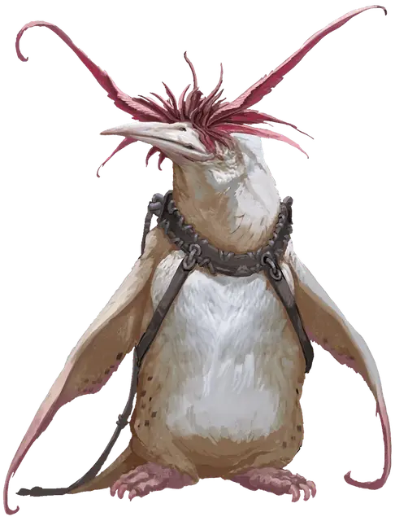

Кингспорт
Kingsport
Средний Зверь, без мировоззрения, именной НИП

Класс Доспеха 11
Хиты 5 (1к8 + 1)
Скорость 20 футов, плавая 40 футов
| мод | спас | ||
|---|---|---|---|
| СИЛ | 6 | −2 | −2 |
| ЛОВ | 12 | +1 | +1 |
| ТЕЛ | 12 | +1 | +1 |
| мод | спас | ||
|---|---|---|---|
| ИНТ | 10 | +0 | +0 |
| МДР | 10 | +0 | +0 |
| ХАР | 4 | −3 | −3 |
Чувства слепое зрение 30 футов (слеп за его пределами), пассивное Восприятие 10
Языки Общий
Опасность 0
Бонус мастерства +2
Особенности
Задержка дыхания. Пингвин может задержать дыхание на 30 минут.
Действия
Клюв. . Рукопашная атака оружием: +3 к попаданию, досягаемость 5 футов, одна цель. Попадание: Колющий урон 3 (1к4 +1).
Описание
Скривинскрай - арканалот, который всегда говорит о себе в третьем лице. Он питает пристрастие к чёрной лакрице, полоски которой хранит в карманах своего халата. Исчадие сопровождает Кингспорт, слепой гигантский пингвин-альбинос, находящийся под действием заклинания пробуждение разума [awaken].
Беспокойному слуге-пингвину Скривинскрай, Кингспорту, была обещана просветленная жизнь. Правда в том, что Кингспорт превратился в лакея Скривинскрай который живет в страхе перед своим жестоким, непредсказуемым хозяином. Слепой гигантский пингвин надеется однажды освободиться от арканалота.